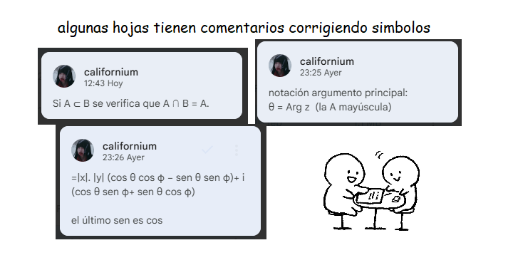

Matemática II
qué hay en el drive?
- programa de la materia
- teoría 2025
- 3 (tres) ppts de teoría 2025
- tps + algunas resoluciones 2025
- modelos parciales + final
- apuntes del final
- recursos extra
recomiendo leerlo en drive por las correcciones!!

sobre los apuntes
amé esta materia!! los apuntes tienen algunas correcciones, los hice en menos de dos semanas y obviamente iban a tener errores, pero los fui corrigiendo con comentarios a medida que me di cuenta
recursos
canales de youtube:
videos específicos:
la mejor página del mundo:
- AGA FRBA - Página para compartir contenido de Álgebra y Geometría Analítica de la UTN-FRBA
tips para el final
- practica tus tiempooss. 4 horas parece mucho tiempo hasta que tenes que escribir 3 unidades completas de memoria
- aprendé a elegir tus batallas si vas bien con la teoría deja el ejercicio practico para lo último aaaaaaaaaaa
- dormí bien !!! si querés estudiar antes de ir a rendir conviene más dormir temprano y despertarte a la madrugada a estudiar. todos se dan cuenta que trasnochaste no hagas eso